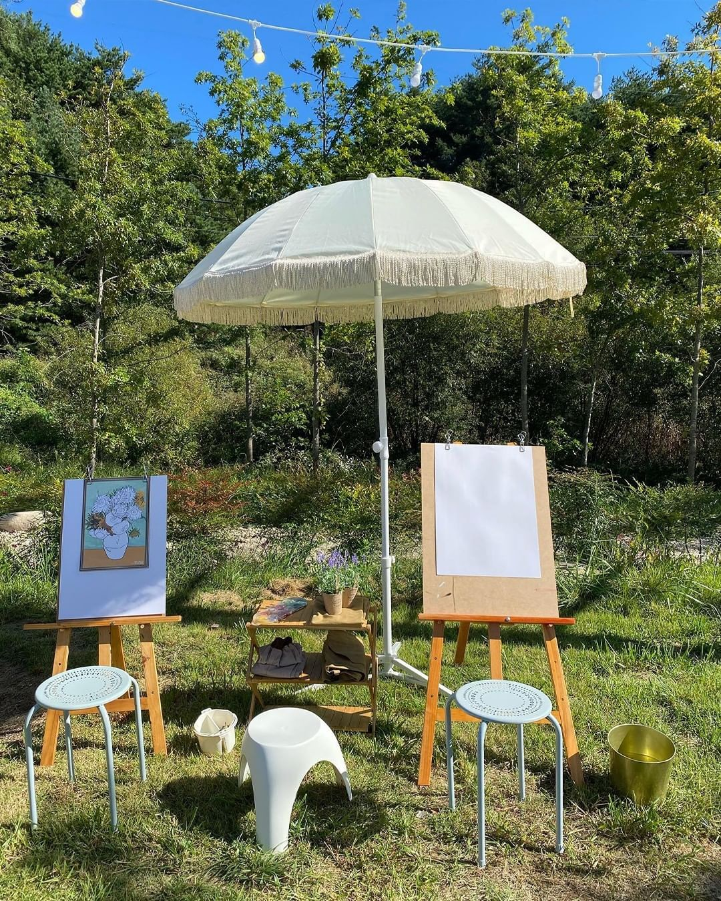

양양 하하팜스테이


☘향긋한 봄향기 가득한 팜크닉 카페 #하하팜스테이 ☘ 드로잉 피크닉 들어보셨나요? 그림을 그리며 따스한 햇살아래 피크닉처럼, 캠핑 온 것처럼 취향 저격 자연속 프라이빗 공간, '하하팜스테이' 입니다 동화속에 들어온 듯 여기저기 신경안쓴 부분이 없고, 새로 생긴 #에프터눈티세트 는 눈도 입도 즐거운 메뉴!🍓 달달 든든하게 배 채웠다면, 우리끼리 꽁냥꽁냥 수다도 떨고, 인생샷도 가득 채워가기 -! ➰ 하하팜스테이 방문 tip! - 4월 봄시즌 개장 완료! 더 유명해지기 전 발빠르게 다녀오세요🤍 - 근처 BTS정류장으로 유명한 향호해변이 있어요! - 예약제로 운영 중! 네이버에 "하하팜스테이"검색! - 아이들과 방문하기도 너무 좋아요 📋 추천 메뉴 - 팜크닉 이용 고객님들께 애프터눈티 세트 무료 제공 - 봄 팜크닉 이용단가 네이버 "하하팜스테이" 확인 ⠀⠀ #양양카페 #하하팜스테이 ⠀⠀⠀⠀⠀⠀⠀⠀⠀⠀⠀⠀⠀⠀⠀⠀⠀⠀ - - - - -